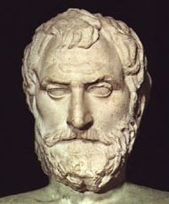

Θαλής

Ο Θαλής από την Μίλητο ήταν ο πρώτος φιλόσοφος που προσπάθησε να προσδιορίσει την αρχή του κόσμου. Ως τέτοια αρχή θεώρησε το νερό.
Στην υπόθεση αυτή οδηγήθηκε ο Θαλής ακολουθώντας τον ορθολογικό τρόπο σκέψης. Αυτό σημαίνει ότι η θεωρία του στηρίχθηκε στην παρατήρηση και την λογική δύναμη του νου του ανθρώπου και όχι στο μύθο ή σε ορισμένες μεταφυσικές ή θεολογικές υποθέσεις.
Συγκεκριμένα, σύμφωνα με τις αντιλήψεις της εποχής του Θαλή, τα τέσσερα βασικά στοιχεία της φύσης είναι: το νερό, η φωτιά, ο αέρας και η γη. Όλα τα πράγματα είναι συνθέσεις των τεσσάρων αυτών στοιχείων, και η μορφή που παίρνει το καθένα εξαρτάται από την αναλογία των στοιχείων αυτών. Έτσι ένα αντικείμενο είναι στερεό, επειδή, από τα τέσσερα στοιχεία της φύσης που το συγκροτούν, εκείνο που πλεονεκτεί είναι η γη, κάποιο άλλο αντικείμενο βρίσκεται σε υγρή κατάσταση, επειδή το πλεονάζον στοιχείο είναι το νερό κ.ο.κ.
Ο Θαλής, μπορούμε να υποθέσουμε, θα έκανε την ακόλουθη σκέψη: η αρχή του κόσμου θα πρέπει να είναι ένα από τα τέσσερα βασικά στοιχεία της φύσης. Επειδή μάλιστα, όπως μπορεί να παρατηρήσει κανείς γύρω του, το πλεονάζον στη φύση στοιχείο είναι το νερό, λογικά θα πρέπει το συστατικό αυτό να είναι και η αρχή του κόσμου.
Όσο και αν η άποψη του Θαλή ότι η αρχή του κόσμου είναι το νερό ίσως μας φαίνεται σήμερα αφελής, είναι ωστόσο μια υπόθεση που δε στερείται επιστημονικής σημασίας. Μόλις πριν από πενήντα περίπου χρόνια προβλήθηκε η θεωρία ότι τα πάντα έχουν προέλθει από το υδρογόνο, από το οποίο, ως γνωστόν, αποτελείται το νερό κατά τα δύο τρίτα του. Επιπλέον, με την υπόθεση του αυτή, ο Θαλής εισήγαγε μια σημαντική στο χώρο της επιστήμης έννοια. Πρόκειται για την έννοια της αρχής, που έκτοτε αποτελεί βασικό όρο της επιστημονικής διανόησης.